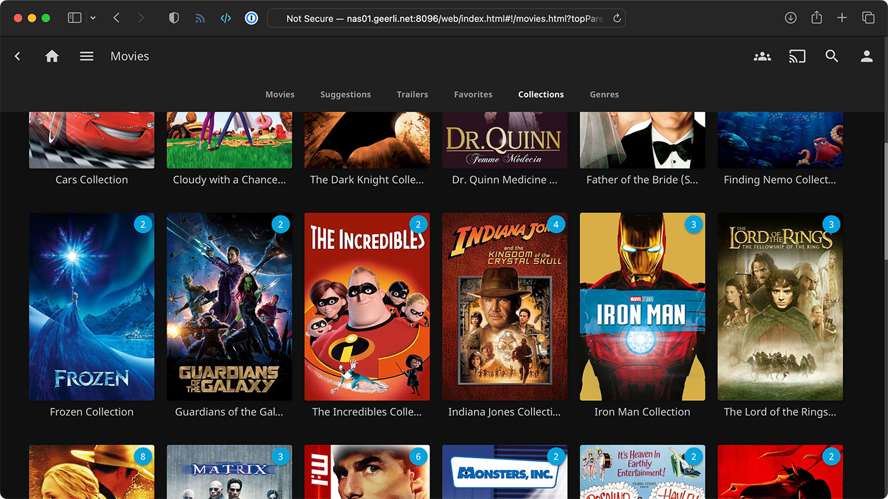
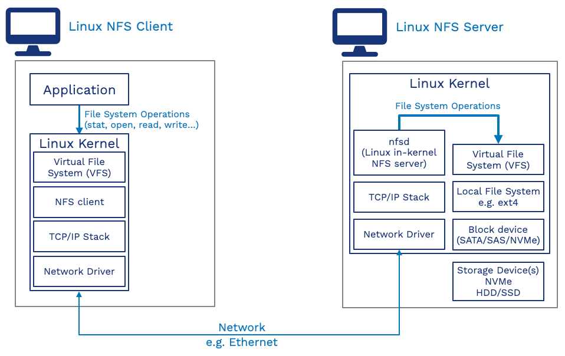
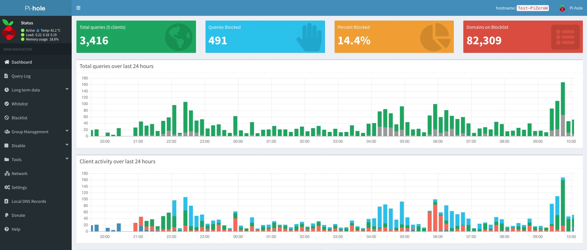

Welcome to my website. This was created with GitHub Pages, Vim, PHP, and some spare time. I want this to serve as a "Portfolio" of sorts for my various homelab and Linux related projects that I have done in my spare time. My goal is to pivot my career path away from construction and into IT or web design.
I have an extensive background in customer-facing roles, spanning the entirety of my adult working life. I am personable, patient, and easy to talk to, which I believe makes me a good candidate for Helpdesk Technician roles. I plan to aquire my A+ certification by the end of 2026.
While I am completely self-taught in the field of Computer Science, my genuine passion for it has allowed me to become relatively competent. Below, you can see a list of my projects. Some images have been included for reference, though they may not be actual pictures of said projects.



This is not an exhaustive list of all my projects, rather, I hope that it will help you understand that I am more than what my resume may lead you to believe.